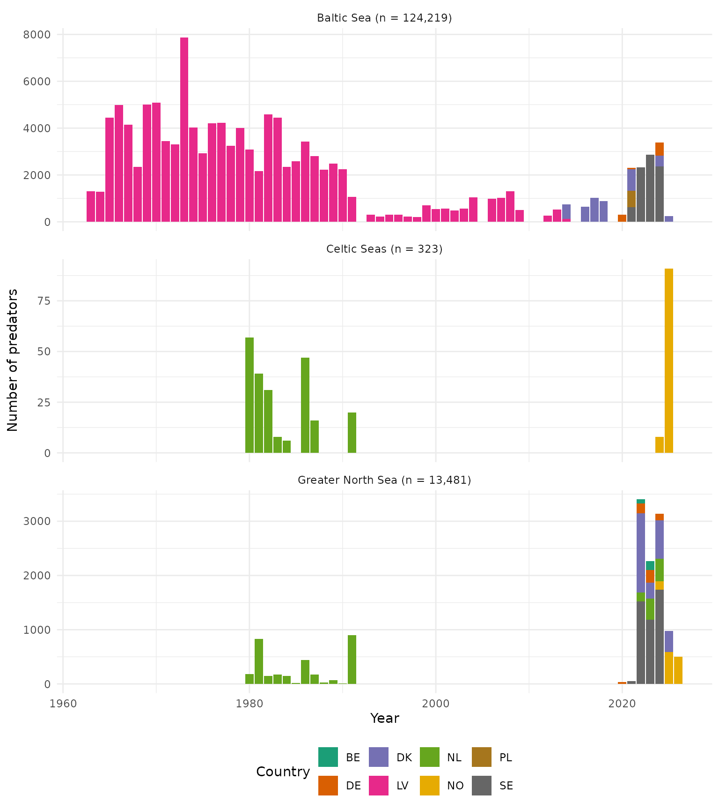
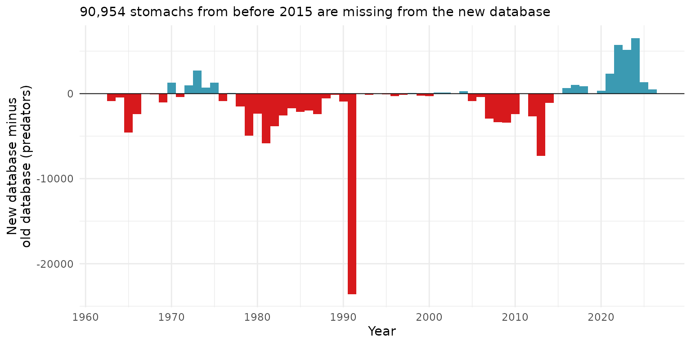

This vignette downloads the full ICES stomach database for each of the three ecoregions to show the overall temporal and geographic coverage, and to compare it with ICES previous stomach content database (the migration is not complete, so this vignette can serve as a status-check).
To break down data coverage by region we download each region separately and tag the rows with the ecoregion. The results in this vignette are limited to the three named ICES ecoregions (Baltic Sea, Celtic Seas, Greater North Sea). Data outside all three (the MOSAiC Arctic drift expedition), are not used.
library(stomachr)
library(dplyr)
library(ggplot2)
theme_set(theme_minimal())
regions <- c("Baltic Sea", "Celtic Seas", "Greater North Sea")
dat <- lapply(regions, function(r) {
path <- tempfile()
download_stomach(path, ecoregion = r)
join_stomach_data(path) |>
mutate(ecoregion = r) |>
distinct(tbl_predator_information_id, year, country, ecoregion, lat, lon)
}) |>
bind_rows()
#> Warning: One or more parsing issues, call `problems()` on your data frame for details,
#> e.g.:
#> dat <- vroom(...)
#> problems(dat)We only need join_stomach_data() here (year, country,
and coordinates are already attached to every predator, and we’re
looking at database coverage rather than diet composition). We also
select down to just the columns we need right after joining each region
separately.
Predators by year, country, and ecoregion
Plot n predators by year, country and ecoregion:
n_pred_by_year_country <- dat |>
count(ecoregion, year, country)
ecoregion_totals <- n_pred_by_year_country |>
summarise(total = sum(n), .by = ecoregion) |>
mutate(label = paste0(ecoregion, " (n = ", format(total, big.mark = ",", trim = TRUE), ")"))
ecoregion_labels <- setNames(ecoregion_totals$label, ecoregion_totals$ecoregion)
ggplot(n_pred_by_year_country, aes(year, n, fill = country)) +
geom_col() +
scale_fill_brewer(palette = "Dark2") +
facet_wrap(~ecoregion, ncol = 1, scales = "free_y", labeller = as_labeller(ecoregion_labels)) +
labs(x = "Year", y = "Number of predators", fill = "Country") +
theme(legend.position = "bottom")
Sampling locations by year
Plot spatial coverage: one plot per region, one panel per year, points coloured by country.
Comparison against the old (pre-relaunch) database
Before the new database launched around 2022, there was another ICES
stomach data base. When relaunching the data, the format was also
changed. From the single StomachDataFullOutput.csv to the 4
.csv file version (one for each data type) in the current format.
All data have still not been reuploaded in the new format. This
section serves as a guide to identify which data need to be reuploaded
in the new format.
Below I compare the data coverage in the live version of the new
database, with the last online version of the old database. The old
export itself is 131MB, too big to bundle. Instead,
data-raw/build_old_db_summary.R aggregates it down to a
year/country/ecoregion predator-count summary
(inst/extdata/old_database_summary.csv) which ships with
the package.
The old export uses full country names rather than the ISO codes the
new database uses, so those were mapped by hand when building the
summary. It also has no ecoregion column, so it was classified into the
same regions from Latitude/Longitude: east of
13°E is Baltic Sea; east of 9°E is also Baltic Sea if south of 56°N
(this picks up the Danish straits/Kattegat); everything else is Greater
North Sea. Note that this merges Celtic Seas into Greater North Sea
(Celtic Seas doesn’t have much old data and isn’t easy to split out by
coordinates alone).
country_map <- c(
"Belgium" = "BE", "Germany" = "DE", "Denmark" = "DK", "France" = "FR",
"United Kingdom" = "GB", "Ireland" = "IE", "Latvia" = "LV",
"The Netherlands" = "NL", "Norway" = "NO", "Poland" = "PL", "Sweden" = "SE"
)
country_name_map <- setNames(names(country_map), country_map)
n_old <- readr::read_csv(
system.file("extdata", "old_database_summary.csv", package = "stomachr"),
show_col_types = FALSE
)
n_new <- dat |>
distinct(tbl_predator_information_id, year, country, ecoregion) |>
count(ecoregion, year, country, name = "n_new")
cmp <- full_join(n_new, n_old, by = c("ecoregion", "year", "country")) |>
mutate(
across(c(n_new, n_old), \(x) coalesce(x, 0L)),
diff = n_new - n_old
)Importantly, the section below compares counts. They are not matched by IDs! It may therefore be that for a given column that is say positive, it could be that other fish are uploaded. It does not necessarily mean that the same fish where re-uploaded and some more. I tried to match individual predator records by ID before falling back to comparing counts, but it doesn’t work for almost the entire database. It means that for nearly every country, there is no way to check whether a specific old predator record made it into the new database.
Specifically, what I tried, in order:
SampleNo(old) againstFishID(new) – documented (in the related FishStomachs package’s format notes) as “unique for country, year, quarter, and ship” rather than globally unique, so we joined on the composite keycountry + year + ship + fish_id. This did find real matches (predator AphiaID agreed on 100% of ~36,700 matched rows, way too consistent to be coincidence), but the key wasn’t unique: more matched rows than old rows going in, meaning some keys matched more than one predator.Progressively tightened the key with
month, thenday, thenHaul/haul_noandStation/station_number. The full keycountry + year + month + day + ship + haul_no + station_number + fish_idfinally gives a clean match: 1,453 rows, zero keys matching more than one predator, and again 100% predator AphiaID agreement. But, all 1,453 of those matches are Latvia.. I checked Denmark specifically, dropping all the way back to justyear + month + ship + haul_no + station_number(noday, nofish_id), but still zero overlapping haul-events, despite ship codes themselves clearly being shared between the two exports (e.g."26D4"appears as a Danish ship code in both).
Hence, the following plots compares counts of unique
predators, not individual records. diff is
n_new - n_old, i.e. the difference in how many predators
exist for a given year/country/region. A positive bar means the new
database has more predators than the old export for that
year/country; negative means it has fewer.
Note that the old export only covers up to 2014. Positive bars from 2015 onwards just mean the new database has since collected data the old database never have had.
range(n_old$year, na.rm = TRUE)
#> [1] 1963 2014Overall
First we look at the total difference in n summed across every country, before breaking it down by country and region. Bars smaller than 5 predators either way are dropped to focus on the meaningful differences.
year_breaks <- function(n = 10) {
function(x) {
rng <- range(x, na.rm = TRUE)
if (rng[1] == rng[2]) {
return(rng[1])
}
sort(unique(round(scales::extended_breaks(n = n)(rng))))
}
}
missing_before_2015 <- function(data) {
data |>
filter(year < 2015) |>
summarise(n = sum(pmax(-diff, 0))) |>
pull(n)
}
missing_subtitle <- function(data) {
paste0(
format(missing_before_2015(data), big.mark = ","),
" stomachs from before 2015 are missing from the new database"
)
}
diff_bar <- function(data, subtitle = NULL, facet = NULL) {
# width = 1: geom_col()'s default width is derived from the smallest gap
# between x values actually present. A country with data in only two
# widely-spaced years (e.g. 1981 and 1991) would otherwise get bars ~10
# years wide instead of ~1 -- fixing the width stops that.
p <- data |>
filter(abs(diff) >= 5) |>
ggplot(aes(year, diff, fill = diff >= 0)) +
geom_col(width = 1) +
geom_hline(yintercept = 0, linewidth = 0.3) +
scale_x_continuous(breaks = year_breaks(10)) +
scale_fill_manual(values = c(`TRUE` = "#3B9AB2", `FALSE` = "#D7191C"), guide = "none") +
labs(x = "Year", y = "New database minus\nold database (predators)")
if (!is.null(facet)) p <- p + facet_wrap(facet, ncol = 3)
if (!is.null(subtitle)) p <- p + labs(subtitle = subtitle)
p
}
diff_bar_country <- function(data, subtitle = NULL) {
p <- data |>
filter(abs(diff) >= 5) |>
mutate(country_name = unname(country_name_map[country])) |>
ggplot(aes(year, diff, fill = country_name)) +
geom_col(width = 1) +
geom_hline(yintercept = 0, linewidth = 0.3) +
scale_x_continuous(breaks = year_breaks(10)) +
scale_fill_brewer(palette = "Dark2") +
labs(x = "Year", y = "New database minus\nold database (predators)", fill = "Country") +
theme(legend.position = "bottom")
if (!is.null(subtitle)) p <- p + labs(subtitle = subtitle)
p
}
cmp_overall <- cmp |>
summarise(n_new = sum(n_new), n_old = sum(n_old), .by = year) |>
mutate(diff = n_new - n_old)
diff_bar(cmp_overall, subtitle = missing_subtitle(cmp_overall))
By region
Each region shown two ways: the region-level total, and the same gap broken down by country to see who’s driving it.
cmp_region <- cmp |>
summarise(n_new = sum(n_new), n_old = sum(n_old), .by = c(ecoregion, year)) |>
mutate(diff = n_new - n_old)
for (r in regions) {
cat("####", r, "\n\n")
d <- filter(cmp_region, ecoregion == r)
subtitle <- missing_subtitle(d)
print(diff_bar(d, subtitle = subtitle))
cat("\n\n")
print(diff_bar_country(filter(cmp, ecoregion == r), subtitle = subtitle))
cat("\n\n")
}By country
Also faceted by region: the old export has complete coordinates for
every predator (no missing Latitude/Longitude
at all), so there’s no data-quality reason not to break this down
further. Note the the Celtic Seas are not resolved here!
for (co in sort(unique(cmp$country))) {
cat("####", country_name_map[[co]], "\n\n")
d <- filter(cmp, country == co)
if (nrow(filter(d, abs(diff) >= 5)) == 0) {
cat("No differences of at least 5 predators for any year/region.\n\n")
} else {
print(diff_bar(d, subtitle = missing_subtitle(d), facet = "ecoregion"))
}
cat("\n\n")
}